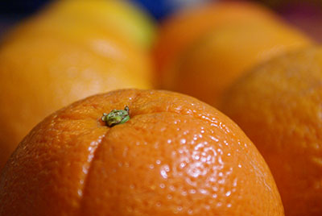

"I've pretty much given up on the orange. I really have. I just don't even bother. It's just either sour, or woody, or the skin's too thick. It's very nice when you come across the perfect orange, because it's really a beautiful experience. But the stakes are too high.
Scott Thompson
The orange (specifically, the sweet orange) is the fruit of the citrus species Citrus × sinensis in the familyRutaceae.[2] The fruit of the Citrus sinensis is called sweet orange to distinguish it from that of the Citrus aurantium, thebitter orange. The orange is a hybrid, possibly between pomelo (Citrus maxima) and mandarin (Citrus reticulata), cultivated since ancient times.[3]
Probably originated in Southeast Asia,[4] oranges were already cultivated in China as far back as 2500 BC. Between the late 15th century and the beginnings of the 16th century, Italian and Portuguese merchants brought orange trees in the Mediterranean area. The Spanish introduced the sweet orange to the American continent in the mid-1500s.
Orange trees are widely grown in tropical and subtropical climates for its sweet fruit, which can be eaten fresh or processed to obtain juice, and for its fragrant peel.[4] They have been the most cultivated tree fruit in the world since 1987,[5] and sweet oranges account for approximately 70% of the citrus production.[6] In 2010, 68.3 million tonnes of oranges were grown worldwide, particularly in Brazil and in the US states of California[7] and Florida.[8]
The origin of the term orange is presumably the Sanskrit word for "orange tree" (नारङगम्, nāraṅga),[9] whose form has changed over time, after passing through numerous intermediate languages. The fruit is known as "Chinese apple" in several modern languages. Some examples are Dutch sinaasappel[10] (literally, "China's apple") and appelsien, or Low German Apfelsine. In English, however, Chinese apple usually refers to the pomegranate.[11]